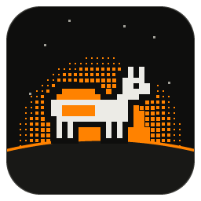

PACKMULE BetaPackmule runs on your own computer and keeps working when the internet does not. Load it with your manuals and it answers from them, with the page. Give it jobs and it works in steps, asking before it saves anything. No account, no cloud, and nothing leaves the machine.
Open Terminal (press Command and Space, type Terminal, press Return). Paste this line and press Return.
curl -fsSL https://jholmquest99.github.io/packmule/install.sh | bashNeeds a Mac with an Apple chip (M1 or newer), macOS 13 or newer, and about 10 GB of free space.
Open PowerShell (press the Windows key, type PowerShell, press Enter). Paste this line and press Enter.
irm https://jholmquest99.github.io/packmule/install.ps1 | iexNeeds 64-bit Windows 10 or 11 and about 12 GB of free space. 16 GB of memory or more is best.
Add your manuals, guides and spreadsheets to a project. Answers quote your files and show the page, so you can check them.
An agent that looks things up, works out sums with a calculator, builds a table from a whole manual, and saves the result as a file. It asks first.
After the first download it never needs the internet again. No account, no subscription, and nothing you type or load leaves the computer.
This is a beta. It has been tested on one Mac and has only just reached Windows. Expect rough edges, and keep your own copies of anything that matters.
The models are small enough to run at home, so they are not as sharp as the big online ones. They are good at finding and quoting what your files say. Check any number before you rely on it.
It reads PDF, Word, text, Markdown, web pages, CSV and Excel files. It cannot read scanned pages yet.
To remove it: on a Mac, drag Packmule from Applications to the Trash. On Windows, use Add or remove programs. Your chats, files and models stay in its data folder until you delete that too.
The app is not signed with a paid certificate yet, so a file downloaded through a browser gets a warning. The commands above avoid it.
Mac: open the disk image and drag Packmule to Applications. The first time you open it, macOS will refuse. Go to System Settings, Privacy and Security, scroll down and choose Open Anyway.
Windows: when "Windows protected your PC" appears, choose More info, then Run anyway.